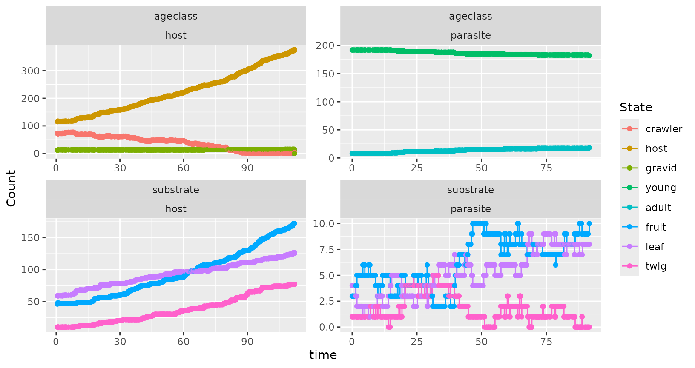
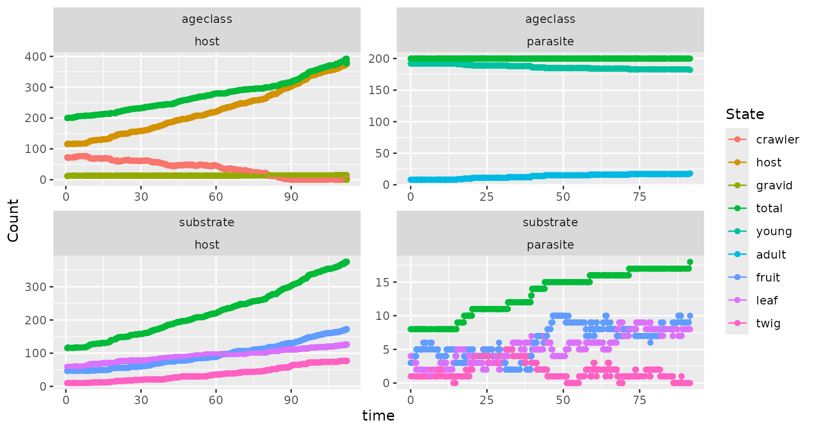
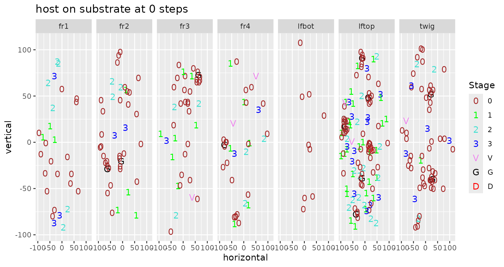
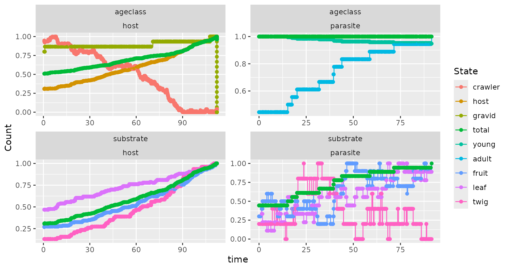
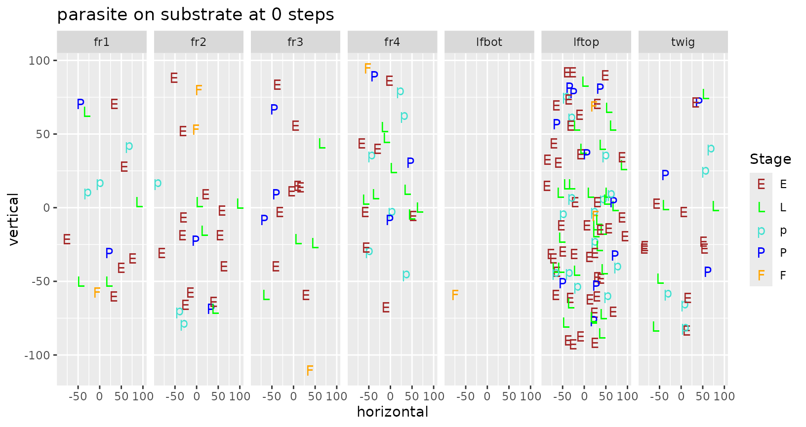
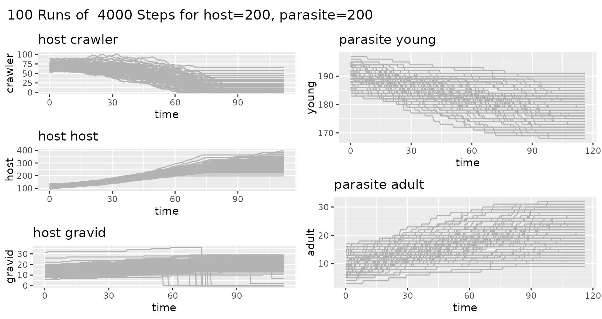
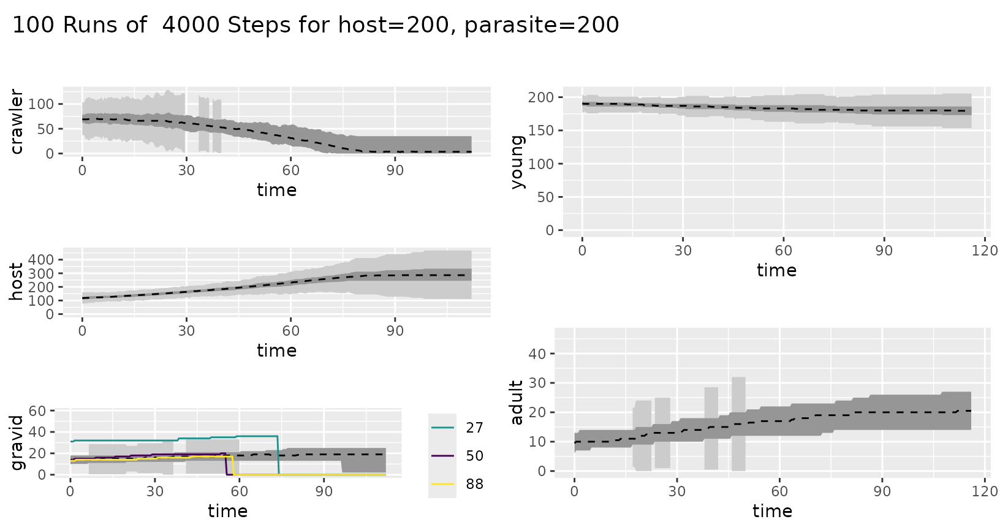
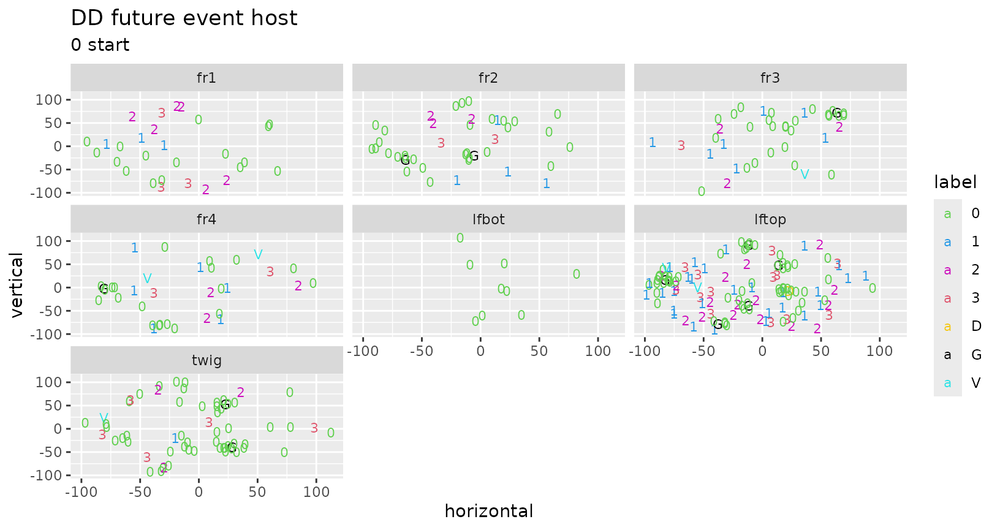
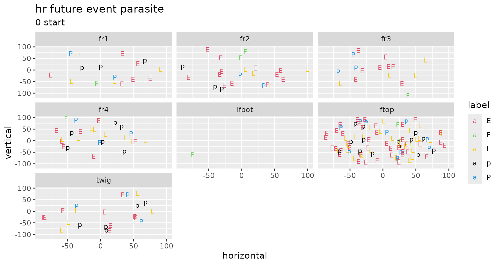

Ewing Individual-Based Modeling
16 July 2026
ewing.RmdModular approach
This was developed 18 Nov 2002 and updated 10 Aug 2022.
A big change is that I have modularized things. The default species are now “host” and “parasite”. There is a second library called “redscale” that has redscale and aphytis and comperiella and encarsia. (Actually, host is just redscale, and parasite is just aphytis). Now you can set up a new system by just creating a new library package.
The second big change is that I use R conventions of passing arguments, rather than hiding things as I have done in the past. Now you do
mysim <- init.simulation(interact = FALSE)
#> Data organism.features already loaded
#> Initializing Temperature Profile ...
#> Data temperature.par already loaded
#> Data temperature.base already loaded
#> Base daily temperature fluctuation:
#> Temperature set for days 0 to 202
#> Daily low temperature range: 68 to 77
#> Daily high temperature range: 83 to 92
#> Run temp.design() to adjust temperature range
#> Initial active temperature:
#> lo.hour hi.hour
#> 0 24
#> Creating simulation organism set using species:
#> host, parasite
#>
#> Data future.host already loaded
#> Data substrate.host already loaded
#> Data future.parasite already loaded
#> Data host.parasite already loaded
#> Data substrate.parasite already loaded
#> Data substrate.substrate already loaded
#>
#> Initialize host at size 200...
#> Initializing events for host with 200 individuals
#> Initialize parasite at size 200...
#> Initializing events for parasite with 200 individuals
simres <- future.events(mysim, refresh = 1000, plotit = TRUE)
#> initial: host 200: parasite 200
#> lo.hour hi.hour
#> 0 48
#> refresh 1000: host 320: parasite 200
#> refresh 2000: host 457: parasite 200
#> refresh 3000: host 457: parasite 200
#> refresh 4000: host 457: parasite 200
simres <- future.events(mysim, plotit = FALSE)
#> initial: host 200: parasite 200
#> lo.hour hi.hour
#> 0 48
#> refresh 200: host 234: parasite 200
#> refresh 400: host 262: parasite 200
#> refresh 600: host 280: parasite 200
#> refresh 800: host 304: parasite 200
#> refresh 1000: host 324: parasite 200
#> refresh 1200: host 359: parasite 200
#> refresh 1400: host 378: parasite 200
#> refresh 1600: host 378: parasite 200
#> refresh 1800: host 378: parasite 200
#> refresh 2000: host 378: parasite 200
#> refresh 2200: host 378: parasite 200
#> refresh 2400: host 378: parasite 200
#> refresh 2600: host 378: parasite 200
#> refresh 2800: host 378: parasite 200
#> refresh 3000: host 378: parasite 200
#> refresh 3200: host 378: parasite 200
#> refresh 3400: host 378: parasite 200
#> refresh 3600: host 378: parasite 200
#> refresh 3800: host 378: parasite 200
#> refresh 4000: host 378: parasite 200
plot(simres, substrate = FALSE)
plot(simres, total = FALSE, normalize = FALSE, substrate = FALSE)
plot(simres, normalize = FALSE, substrate = FALSE)
plot(simres, ageclass=FALSE)
#> [[1]]
#>
#> [[2]]
plot(simres, substrate = TRUE)
#> [[1]]
#>
#> [[2]]
#>
#> [[3]]
The object “mysim” has the initial populations and the organism and temperature structures. The object “simres” has the populations after running future.events (used to be step.future), along with summary information from the run.
I have also modularized the immediate, pending and future events. The functions
event.birth birth immediate event
event.attack attack immediate event
event.death death pending event
event.future generic future eventYou can supply your own version of these if you don’t like mine. And you can add new ones by making appropriate changes in the “event” column of the future.host and future.parasite column. Adding a new kind of event, such as migrate means the routine now looks for a routine called “event.migrate”. Also, event.attack uses the type of parasite (endo,ecto) and the actual event (feed,ovip) to look for routines like event.ecto.feed to process attack details.
Multiple Simulation Runs
data(simdata)
summary(simdata)
#> 100 Runs of 4000 Steps for host=200, parasite=200
#> # A tibble: 10 × 8
#> species item r central lo hi whisker.lo whisker.hi
#> <chr> <chr> <dbl> <dbl> <dbl> <dbl> <dbl> <dbl>
#> 1 host crawler 0 69 62 79 36.5 104.
#> 2 host crawler 112 3.5 0 35 -52.5 87.5
#> 3 host host 0 118 108 129 76.5 160.
#> 4 host host 112 286 245 334 112. 468.
#> 5 host gravid 0 14 10 18 -2 30
#> 6 host gravid 112 19 2 25 -32.5 59.5
#> 7 parasite young 0 190. 187 194 176. 204.
#> 8 parasite young 116 180. 173 186 154. 206.
#> 9 parasite adult 0 9.5 6 13 -4.5 23.5
#> 10 parasite adult 116 20.5 14 27 -5.5 46.5
ggplot_ewing_envelopes(simdata)
ggplot_ewing_envelopes(simdata, confidence = TRUE)
#> Warning: Removed 152 rows containing missing values or values outside the scale range
#> (`geom_ribbon()`).
#> Warning: Removed 125 rows containing missing values or values outside the scale range
#> (`geom_ribbon()`).
#> Warning: Removed 192 rows containing missing values or values outside the scale range
#> (`geom_ribbon()`).
Other plots
ggplot_current(simres, "host")
ggplot_current(simres, "parasite")
Interactive
These plots show splines use graphics::locator() to
adjust nodes.
The routines five.plot() and five.show()
are two different versions of an interactive study of the 5-parameter
relationship of time and mean value.
five.plot()
five.show()interactive design plot for high and low temperatures. Uses
graphics::locator().
temp.design(simres)Inner workings of ewing simulation
Simulations are driven by flat files that declare the species, their
relationships with each other and with the model substrate, and the
details of scheduling future events for individuals. There are also
files that specify the temperature regime, which is important if species
respond to degree-day (DD) cues rather than temporal cues;
this aspect is only briefly developed (see some plot ideas above) and
will not be discussed further below. Here we use the default files in
the data part of this package.
These simulations keep track of the current stage and next scheduled future event for every individual. That is, these simulations are individual-based rather than population-based. It is useful (such as for plots and other summaries) to collapse over individuals to get population trends, but impossible to reverse this without unrealistic assumptions. To that end, summary information at the population level (say by species life stages) are accumulated during the simulation, and later simplified for plots and tables.
This simulation is set up so that names of species, their stages, and subtrates are taken from the flat tables rather than being hardcoded. They are not limited to two species, although ultimately interactions are dyadic (two individuals) and monadic choices of future trajectories come down to competing risks for individuals.
Initialization
One begins a simulation by initializing all species. The
organism.features table specifies multiple features of the
simulated community. The units specify whether a species’
internal close is regulated by the hour (hr) or by
degree-day (DD). The offspring is either a
Poisson mean number (for a host species) or the name of the
host species (for a parasite species).
Similarly, attack is set to the host species
for a parasite or NA if species is not a
parasite. The parasite column specifies the
type of parasite (ecto or endo; NA if not a
parasite).
The deplete is the inverse of the depletion rate over
time for individuals in species relative to time units that have passed.
That is, the depleteion rate = (time lapse of event ) /
deplete (leading of course to death unless the individual
feeds. For species that are not parasites, the
birth column has the stage when births occur
(gravid for host).
Individuals in a species may move across a substrate.
Which ageclass (subclass) of a species moves across the
substrate? (host for host and
adult for parasite; used for counting) and
which stage of a species can actually move along the
substrate?
Each species has a future event scheduling table
(future.host and future.parasite). The
init column specifies the relative weight of
current stages for simulating the initial population.
Future events and competing risks
Each row of a future event scheduling table has possible
future events from a current stage in the life
of an individual of that species. The fid points to the row
in this table corresponding to the future stage. The code
uses numeric fid because it ends up in a vector of other
numeric values. An individual in a species will progress from
current to future stage when its event time is
at the top of the event queue, unless some interaction leads to a change
for that individual. The future event time is scheduled
using the time entry. When an individual is at the top of
the event queue, the future event time is scheduled using a
spline interpolation with mean from the time value. If the
species uses hours (hr), the spline is just a straight
line, but if it uses DD the spline uses information from
the temperature profile for the simulation (again, not
discussed here yet).
Note that sometimes there are multiple rows with the same
current value, which are competing risks. For instance
future.host has competing risks from the
current stage second.3 of becoming
female or male, while
future.parasite has competing risk from the current stage
adult to feed or oviposit, with
return lines from feed and ovip to
adult. That is, an adult parasite might feed or oviposit,
which have different health and population consequences: feeding
prolongs life while ovipositing produces new offspring and depletes
life.
All individuals have a current stage and are organized
into an event queue, which is a triply-linked leftist tree, based on the
scheduled time for their next future event. Each species
has its own leftist tree, with the tops of those trees identifying the
individuals with the closest (in time) next future event.
Internal routine put.species, in conjuction with
leftist.update, leftist.remove or
leftist.birth, modify the leftist trees when there is an
individual event update, death (remove) or birth(s), respectfully.
Plots and summaries
Plots used the plot character (pch), color
(for stage) and ageclass (for summary grouping). The
event column is useful for summary tables and plotting, and
sometimes for other categorization (such as distinguishing
birth and death from other types of
future events).
Substrates and movement around triangular grid
This simulation system allows for individuals to be dispersed across
a set of substrates and to move within and between
substrate elements. Currently, each substrate
is designed on a triangular coordinate system of interconnected
triangles with diameter of 10 units (hardwired in internal routine
event.move). Connectivity of substrate
segments is determined by table substrate.substrate, while
movement options for species are determined by species tables
(substrate.host and substrate.parasite).
substrate elements may have sides (1,2,3,4 for
fruit, and top, bottom for
leaf). Relative weights for movement are specified for
initial position, chance of a parasite to
find a host, and choice to move
among substrate elements. The last columns of the
substrate species tables give the relative weight of moving
from the current substrate to one of the other
substrates.
The triangular grid and approximations used herein capture most (~95%) of movement while simplifying calculations to max and min primarily rather than using quadratic calculation needed for a rectangular coordinate system (where the Pythagorean theorem rules).
Excel input data file
Users can supply and input data file to modify the simulation setup. In consists of the following sheets:
- control sheet naming species, substrates, and key simulation
parameters
organism.features
- future event sheets
-
future.host,future.parasite(one per species; substitute name used inorganism.features) -
host.parasite(one per each species interaction)
-
- substrate movement sheets (currently only one substrate allowed)
-
substrate.host,substrate.parasite(one per species; substitute name used inorganism.features) -
substrate.substrate(connectivity of substrate components)
-
- temperature sheets
-
temperature.base,temperature.par
-
There are specific, fragile, constraints for naming of and within these sheets. Here are the “rules”:
- organism names (first column or rownames of
organism.features) must agree with the names for future event and substrate movement sheets- default:
hostmust match sheet namesfuture.hostandhost.parasite - default:
parasitematches sheet namesfuture.parasiteandhost.parasite
- default:
- parasites are identified by several things
- entry
ectoorendoin columnparasiteoforganism.features(NA for non-parasites) - entry
host(substitute name of host) in columnoffspringand/orattack(NA for non-parasites; name is not currently checked to match name of a possible host) - the word
parasite(substitute name of parasite) must be in the rownames of thehost.parasite(substitute names of host and parasite) sheet
- entry
- non-parasites (such as hosts) are identified by several things
-
birthcolumn oforganism.featuresneeds validcurrentstage from non-parasite future event sheet - default:
gravidmatches entry incurrentcolumn offuture.hostsheet -
offspringcolumn oforganism.featureshas number (default:20forhost) -
attackcolumn oforganism.featuresis empty (NA) - empty (NA) in column
parasiteoforganism.features(ectoorendofor parasites)
-
-
subclasscolumn oforganism.featuresmust match validageclassof each species- default:
hostmatchesageclassentry infuture.host - default:
adultmatchesageclassentry infuture.parasite - smaller:
grownmatchesageclassentry infuture.host - smaller:
foragermatchesageclassentry infuture.parasite
- default:
-
movecolumn oforganism.featuresmust have validcurrentstage for each species- default:
crawlermatchescurrententry infuture.host - default:
adultmatchescurrententry infuture.parasite
- default:
Redscale thoughts
The fields are mostly self-explanatory. DD represents mean degree days to that future event. Thus the mean time to “virgin” from “third.3” is 560-465=95 DD. The next two fields concern the Aphytis parasite, comprising the relative risk of being killed by an Aphytis that is feeding or is laying eggs, respectively. There was no explicit information on feeding risk, so these are made up following Luck’s papers. The egg-laying risks are directly from the IPM pamphlet. The next two fields have the relative risks for the other two parasites. Then follows the gender (only females modeled here). The next field has the plotting symbol (pch), followed by the plotting color. The last and most important column is the life stage.
Scaling up
The beginning simulations use hundreds of individuals and thousands of simulation steps, as well as tens or hundreds of replicate simulations. Theoretically, it should be possible to scale simulations up to hundreds of thousands of individuals through some attention to loosely coupled systems and GPUs. At small population sizes, these simulations may shed new light on shortcomings of population-based simulations, but it is in large scale that they have the potential to provide useful insights for systems-level study.
It is useful to note that the simulation steps through events rather
than time. Hence time is a function of events. Only in retrospect can
the linear time sequence, and population numbers, be measured. Further,
the relationship between steps and time is nonlinear, so that many steps
may cover only a short time span, or a few steps may traverse much time.
Further, different species may have a different relationship of steps to
time. That is, the resolution for a species is set by the granularity of
events and their mean time duration. The span of the simulation is
determined by the number of allowed steps, and may result in different
spans for different species, when taking into account the unrealized
future events that remain in the community at the time of
simulation stop.